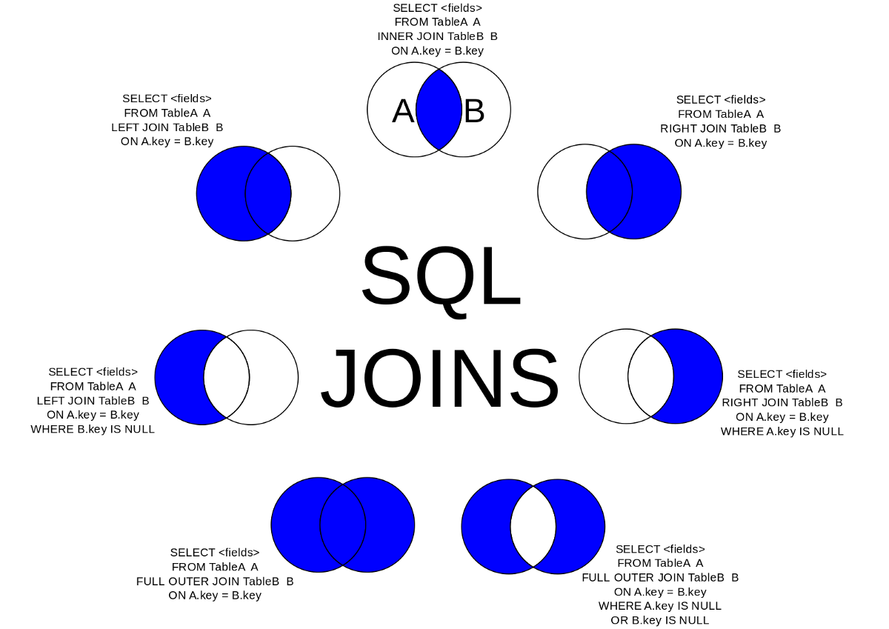

A JOIN clause is used to combine rows from two or more tables, based on a related column (primary, foreign key) between them.
SELECT column_name(s)
FROM table1
JOIN table2
ON table1.column_name = table2.column_name;Let's look at a selection from the "unit_dose_orders" (outdated) table:
unit_dose_order_id | patient_id | dosage
1 | 9 | 0.25 MG
2 | 15 | 50 MG
3 | 18 | 15Then, look at a selection from the "patients" table:
patient_id | first_name | last_name
1 | Miyuki | Riviera
2 | Deunan | Knute
3 | Lois | McAllisterNotice that the "patient_id" column in the "unit_dose_orders" table refers to the "patient_id" in the "patients" table. The relationship between the two tables is the "patient_id" column.
The following SQL statement selects records that have matching values in both tables:
SELECT *
FROM patients p
JOIN admissions a ON a.patient_id = p.patient_id;It is rare to need a join other than (INNER) JOIN.
DISCLAIMER: Our tool only supports INNER/LEFT JOIN
Here are the different types of the JOINs in SQL:
- (INNER) JOIN: Returns records that have matching values in both tables
- LEFT (OUTER) JOIN: Returns all records from the left table, and the matched records from the right table
- RIGHT (OUTER) JOIN: Returns all records from the right table, and the matched records from the left table
- FULL (OUTER) JOIN: Returns all records when there is a match in either left or right table

SELECT *
FROM patients p
JOIN admissions a ON a.patient_id = p.patient_id
JOIN doctors ph ON ph.doctor_id = a.attending_doctor_id;